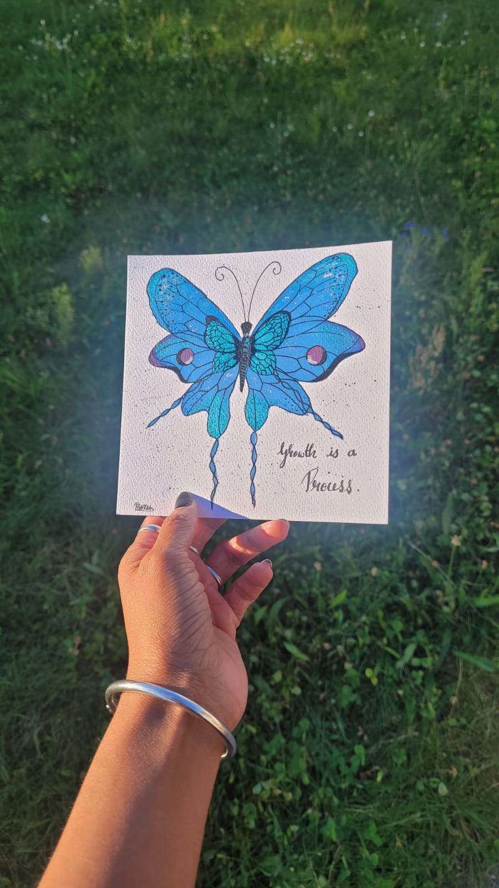

Creative Gallery
Click '×' or anywhere outside to return to the portfolio.


I'm an AI and machine learning engineer with a background in data science and a genuine interest in building things that work in the real world.
I recently completed my MSc in Data Science at Freie Universität Berlin, where I worked on honeybee behavior research using computer vision. I trained PyTorch models on more than 100 hours of video and worked with multi-GPU training pipelines. It was a great opportunity to combine my interest in machine learning with research that had a real purpose.
During my studies, I also worked as a Data Science Working Student at TU Berlin, developing machine learning pipelines for large-scale energy and networking data. Before moving into research, I spent over two years at PwC as a Technical Consultant, where I built Python automation and cloud data pipelines for enterprise clients. I was fortunate to receive the PwC Above and Beyond Einstein Award during that time.
I enjoy working across different parts of the AI stack, whether that's computer vision, RAG applications, or getting models into production. I like solving practical problems, learning from people around me, and seeing the things I build actually being used.
I'm currently exploring AI Engineer, ML Engineer, and Data Scientist opportunities in Germany.
Filter by domain or click any system architecture card to inspect benchmarks, methodology, and source code.
This project implements an asynchronous retrieval-augmented generation (RAG) service designed to answer German legal and administrative queries using verified government sources. It indexes over 10,000 document chunks from official German government portals into a Qdrant vector database and uses Gemini to synthesize grounded, cited responses in under 3.12 seconds.
Core Competencies:
Conducted at the Bio Robotics Lab in Berlin, this Master's thesis focuses on automated spatio-temporal computer vision for detecting honeybee waggle dances in continuous hive recordings. A PyTorch vision pipeline was trained on over 100 hours of high-resolution video data to identify dance events accurately, scaled across multi-GPU hardware for rapid experimentation.
Core Competencies:
This project adapts the View-GCN idea to the 3D human-pose estimation problem: it first extracts per-image keypoint features using a ResNet-based keypoint network, then builds a view graph over multiple camera images of the same scene and runs graph convolutions to aggregate information across views and regress accurate 3D joint coordinates. The pipeline includes data preparation, camera calibration utilities, training & inference scripts, and visualization of predicted vs ground-truth joints.
Core Competencies:
This project builds a privacy-first LLM candidate-screening pipeline engineered to assist recruiters while adhering to GDPR and EU AI Act standards. It automatically redacts personally identifiable information (PII) and applies blind-review masking before evaluating candidates against structured rubrics with verifiable resume citations.
Core Competencies:
This proof-of-concept is a memory-augmented RAG system inspired by how the brain consolidates memory between the hippocampus and cortex. It gives an LLM a two-layer knowledge graph as external memory, so it can reason over up-to-date facts without any retraining. Built with LangChain and Gemini 2.5 Flash.
Core Competencies:
Developed an end-to-end deep learning pipeline to detect and classify 14 types of thoracic abnormalities from chest X-ray images. The solution utilized a multi-label classification approach, leveraging pre-trained models and custom architectures to achieve robust performance on the AMIA Public Challenge 2024 dataset.
Core Competencies:
This project is a production-inspired remediation engine that goes beyond "CPU is high" alerts. A Python collector exports live system metrics to Prometheus; when CPU or memory breaches a threshold, an orchestrator grabs a snapshot of the top processes and asks Gemini 2.5 Flash for a root-cause analysis and a targeted Bash runbook, saved for human review.
Core Competencies:
This project is a back-end system designed to be an e-commerce risk mitigation tool that calculates, stores, and serves a risk score for individual buyers. It processes historical transaction data, including payment patterns, return frequency, and chargeback rates, to generate a predictive buyer rating. This rating allows external services (like a seller's order fulfillment system) to make data-driven decisions, such as requiring extra security steps or declining risky transactions, thereby protecting sellers from potential financial losses.
Core Competencies:
This project is a dbt analytics layer on Databricks that turns a cleaned silver-layer transaction table into fraud alerts and account-balance history. It builds an incremental fraud-alert model, snapshots balance changes, and enforces ledger integrity with data tests, all validated by a CI pipeline on every push.
dbt build against Databricks on every push and pull request.
Core Competencies:
Combining large-scale HPC research in Berlin with enterprise production engineering at PwC.
Coursework in Machine Learning, Deep Learning, Statistical Methods, and Data Engineering
Thesis: Enhancing Automated Honey Bee Waggle Dance Detection (YOLO style object detection in videos)
Coursework in Machine Learning, Big Data, Algorithms, Data Structures, System Design, Computer Networks, DBMS.
"An A-star teammate who thrives on innovation. Whatever the challenge, she finds a way to make it happen."
"With her dedication, innovation, and ability to manage complex projects flawlessly, Prajna has proven herself as a driving force behind successful outcomes."
"Prajna combines strong technical expertise with exceptional leadership and collaboration skills. Her proactive mindset and attention to detail make her an outstanding teammate."
"Known for her sharp problem-solving and proactive attitude. Prajna delivers outstanding results while inspiring those around her."
When I'm not training models or wrangling datasets, I explore the world through words, voice, and canvas.
Crafting verses that blend nature with human emotion. From data patterns to life patterns, words are my other language.
Regular performer at poetry open mics, bringing stories to life through voice and emotion. Storytelling meets performance art.
Every stroke in every color brings the canvas to life. Click to open the full gallery.
Immediately available for AI Engineer, ML Engineer, or Data Scientist roles in Germany. Reach out directly via email, phone, or LinkedIn.
Click '×' or anywhere outside to return to the portfolio.
